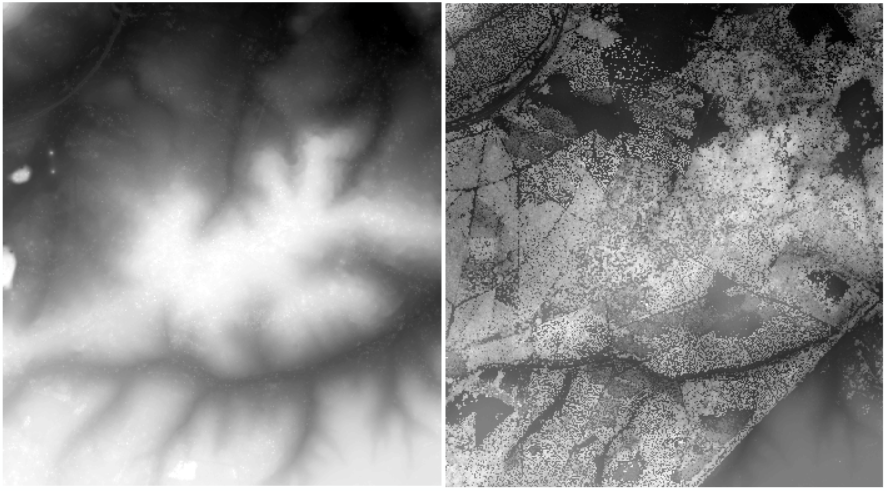
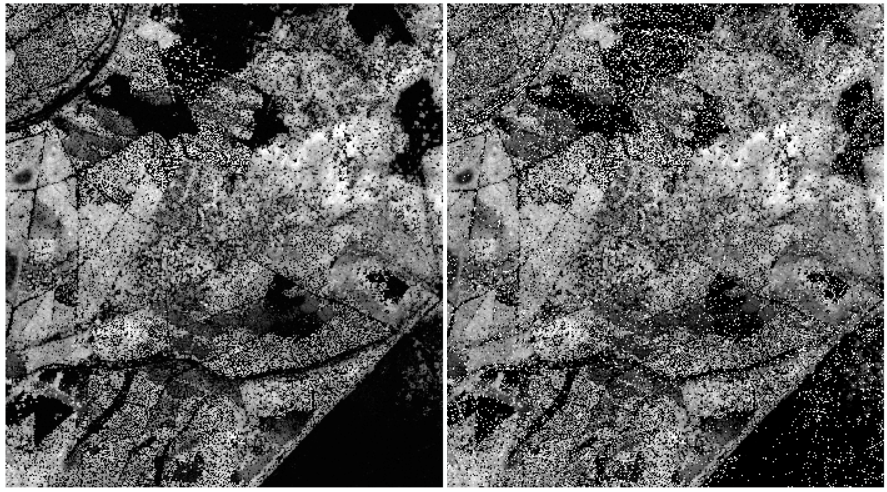
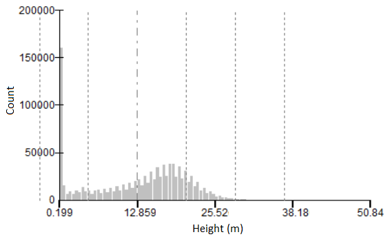
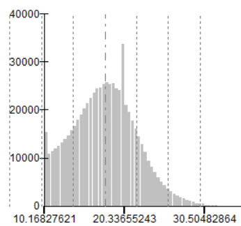
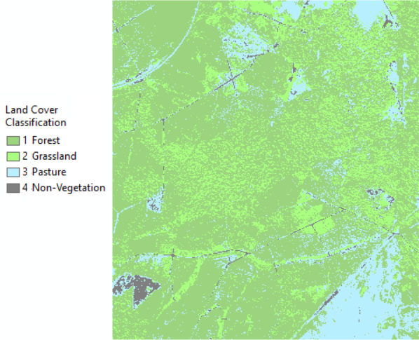
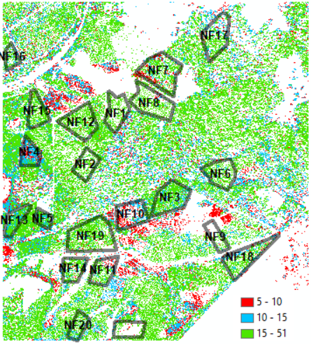

Using LiDAR data to determine tree maturity within 21 forestry enclosures. LiDAR First/Last Returns >> DEM >> nDSM + Land Use classification >> Canopy Height >> Tree maturity
Using the DEM and the First Return LiDAR Pulse 
We can derive a normalised Digital Surface Model (r). There are pixels which return negative value, so they are removed (l). 
This represents vegetation height, normalised across the terrain. i.e. terrain removed. Its distribution below (less the zero values) shows significant pixel count at the lower end, a normal distribution with mean around 12.85 metres and a long tail to 50.8 metres.
(A real annoyance is ArcMap doesn’t play well with float values. It doesn’t like to bin then, use in zonal stats, etc. I know the workaround is to make values Ints and then downscale, but that is a later problem. I do prefer QGIS for the presentation abilities.)

The peaks are artifacts from the histogram binning, as they are (almost) not present when changing the height range:

The lower values could represent shorter vegetation, fences, data errors, measurement errors, or data analysis artifacts. Since we are concerned with tree maturity we’re only bothered with the upper end of the distribution, so the lower values don’t matter too much.
The land cover classification is below which shows four types. The classifaction isn’t perfect, since the curved road (or canal) in the north west is classed as pasture. Again, this doesn’t matter so much in relation to tall, mature trees.

I don’t really know what sort of trees are in this area, but I’m thinking oak and fir.
The forestry enclosures in this area are: 
I don’t know how the foresty industry determines which trees are most profitable to cut. There would be lots of variables, such as the end product (structural, furniture, plywood, paper), location, terrain, species…
The data in the above classification, gives only 4m^2 pixel values. I need to research how to estimate number of trees from this. I assume there are density, species, age, location considerations.
For now, let’s consider the percentage of pixels over 15m in each enclosure and the enclosures’ average height. This was done through Zonal calculations with extract of results:
| Enclosure | % cover over 15m | Average height (m) |
|---|---|---|
| NF15 | 62% | 20.0 |
| NF3 | 57% | 18.7 |
| NF12 | 57% | 21.8 |
| NF19 | 55% | 21.4 |
| NF20 | 55% | 18.6 |
| NF5 | 53% | 17.6 |
| NF1 | 40% | 24.4 |
^(excuse the table layout - it’s a trial effort and doesn’t quite work)
Six enclosures have >50% pixels over 15m, with 18-22m average height. NF1 has the highest average height, but ranked 12th on % coverage.
Although NF1 is sparser than NF15 it may be that the volume of timber available and the dimensions possible to harvest make this more profitable to fell.
To come: - modelling and estimating profits assuming a given tree species - research into estimating ages, sizes, etc from family farm. I’m thinking that a model could be created to estimate forest characteristics. And the results can be validated with our records.